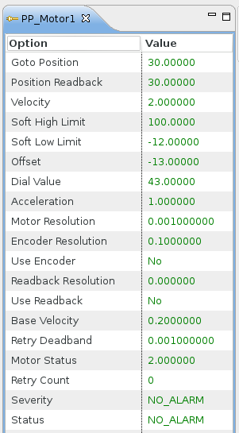
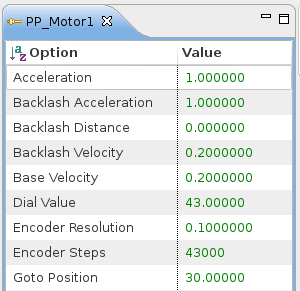

The Device Options view shows all available options of a device selected either in the Devices View or in (one of) the Device Inspector View(s). Below is an example showing options of a selected motor axes:

If necessary the table could be sorted by name by clicking on the „Option” column. With each click the table toggles one step forward through the states unsorted → ascending → descending. An icon in the column header shows the currently active sort state (no icon is shown if unsorted):

Options that are modifiable can be manipulated by clicking on the value. Depending on the data type a suitable editor opens.